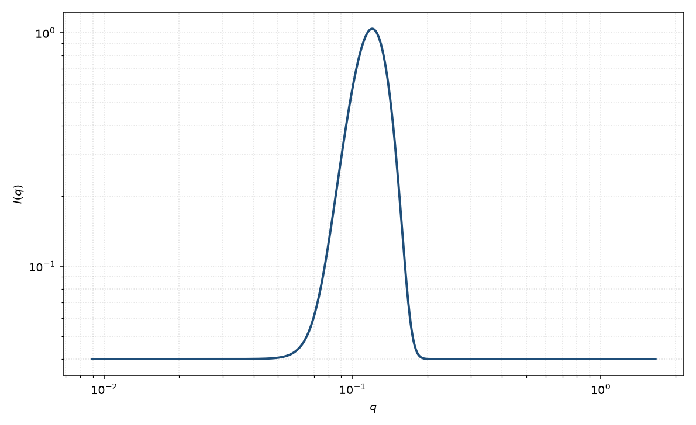

高斯峰
Gaussian peak
适用场景
弱有序或仪器分辨率主导的相关峰接近高斯时，用高斯峰作经验描述。典型对象：宽而对称的层状/立方弱峰、分辨率卷积后的布拉格残峰，以及只需要峰位与宽度的筛选。
峰明显不对称或有 Lorentz 尾时改用洛伦兹峰或宽峰。有明确晶格或层状堆叠时应改用层状 / 准晶形式因子，而不是一个孤立高斯。
物理图像
高斯对应实空间的高斯衰减调制，或只是分辨率函数本身。峰位 $q_0$ 给出重复距离 $2\pi/q_0$，宽度 $\sigma$ 含畴大小与仪器 smearing。
取向：粉末峰是环平均；$q_0$ 不是欧拉角。磁性超结构峰的 $q_0$ 可以与核峰不同。
示意图

核心公式
出发点
本式是经验峰形，不是从某个粒子 $P(q)$ 推出来的。选用高斯，是因为它在 $q$ 空间对称、尾衰减快，并对应实空间高斯型畴包络（或仪器分辨率本身）。峰位 $q_0$ 只给出重复距离的经验读数 $d=2\pi/q_0$。
推导
一维高斯 $\exp[-(q-q_0)^2/(2\sigma^2)]$ 的 Fourier 变换仍是高斯：实空间调制 $\propto\exp(-r^2\sigma^2/2)\,\mathrm{e}^{i q_0 r}$。因此高斯峰意味着关联在距离 $\sim 1/\sigma$ 上高斯衰减，并带周期 $2\pi/q_0$。写入强度并加本底：
$$I(q)=A\exp\left[-\frac{(q-q_0)^2}{2\sigma^2}\right]+B.$$$\sigma$ 是 $q$ 空间标准差，含畴大小与 smearing，不是实空间层间距的 $\sigma_d$。粉末平均已经把三维峰收成 $q$ 上的线；本式不再对 $\theta,\phi$ 积分。
低 $q$ 与渐近
远离峰时高斯尾 $\to 0$，强度回到 $B$。低 $q$ 若 $q_0$ 不接近 $0$，本式没有 Guinier 含义，也不应外推 $I(0)$。高 $q$ 没有 Porod $q^{-4}$：高斯掉得比任何幂律都快。峰明显带洛伦兹尾或可移到 $q=0$ 时，应改用洛伦兹峰或宽峰。
参数表
| 参数 | 符号 | 含义 | 单位 | 典型范围 |
|---|---|---|---|---|
| 峰位 | $q_0$ | 相关峰中心 | Å$^{-1}$ | 由重复距离决定 |
| 宽度 | $\sigma$ | 高斯标准差 | Å$^{-1}$ | 含畴大小与分辨率 |
| 幅度 | $A$ | 峰高 | 与强度单位一致 | 与有序程度、衬度相关 |
| 标度 / 本底 | $\mathrm{scale}$, $B$ | 前置因子与常数本底 | 与强度单位一致 | 实验相关 |
拟合注意
取向：二维弧向收窄说明择优取向，粉末一维高斯不能给出取向分布。片层法向角 $\theta,\phi$ 属于层状页。
多分散的层间距把峰加宽，与仪器 smearing 同向，须用分辨率函数分开。磁性峰宽反映磁畴，不必等于核畴。
可辨识性：本底与宽峰强相关。$q_0$ 靠近 $q_{\min}$ 时峰被截断，位置不可靠。洛伦兹尾被误当成高斯时，$d$ 仍可对，但积分强度会错。
相近模型
- 洛伦兹峰 — 同样峰位，但有更重的尾。
- 宽峰 — 用关联长度与可调指数描述更宽的相关峰。
- Caille 层状堆叠 — 层状峰应回到热起伏堆叠，而不是孤立高斯。
参考文献
- Guinier, A.; Fournet, G. Small-Angle Scattering of X-rays. Wiley: New York, 1955.
- Warren, B. E. X-ray Diffraction. Addison-Wesley: Reading, 1969.